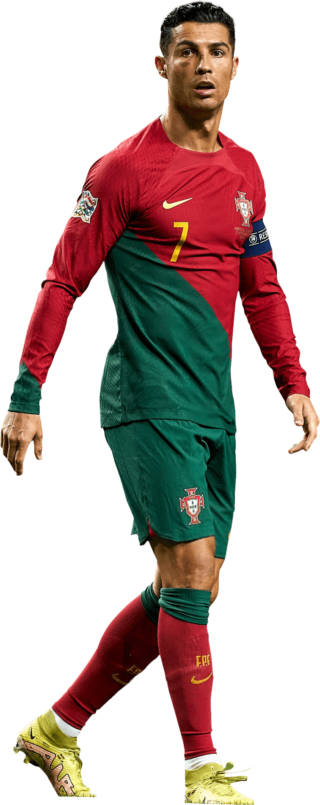

Piala Bola dunia 2022 Qatar bisa jadi akan menjadi panggung terakhir dari 2 GOAT(Greatest of All Time) dalam hampir 15 tahun terakhir. Mereka ialah Cristiano Ronaldo dan Lionel Messi, kedua pemain tersebut telah meraih banyak gelar baik individu maupun club, tetapi sama-sama belum pernah mencicipi gelar piala bola dunia. Akankah salah satu diantara mereka akan memenangkan nya? Atau di penghujung karir nya, mereka pulang tanpa piala bergengsi tersebut? Mari kita saksikan
